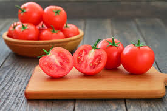

|  | |
Manfaat Tomat untuk Kesehatan |
|
|---|---|
|
Tugas 1 Proweb Rizya Humaira Badrun 241402048 |
Melansir dari United States Department of Agriculture (USDA), 100 gram tomat merah matang mengandung 18 kalori, <1 gram lemak, 0 miligram kolestrol, 5 miligram natrium, 3,89 gram karbohidrat, 1,20 gram serat, dan <1 gram protein. Buah ini juga megandung vitamin C, A, K, antioksidan, hingga kalium. Tomat juga rendah kalori dan rendah lemak, serta memiliki kandungan air yang tinggi. Mengkonsumsi tomat secara rutin dapat memberi dampak baik untuk kesehatan, seperti:
|
| ©Copyright | |